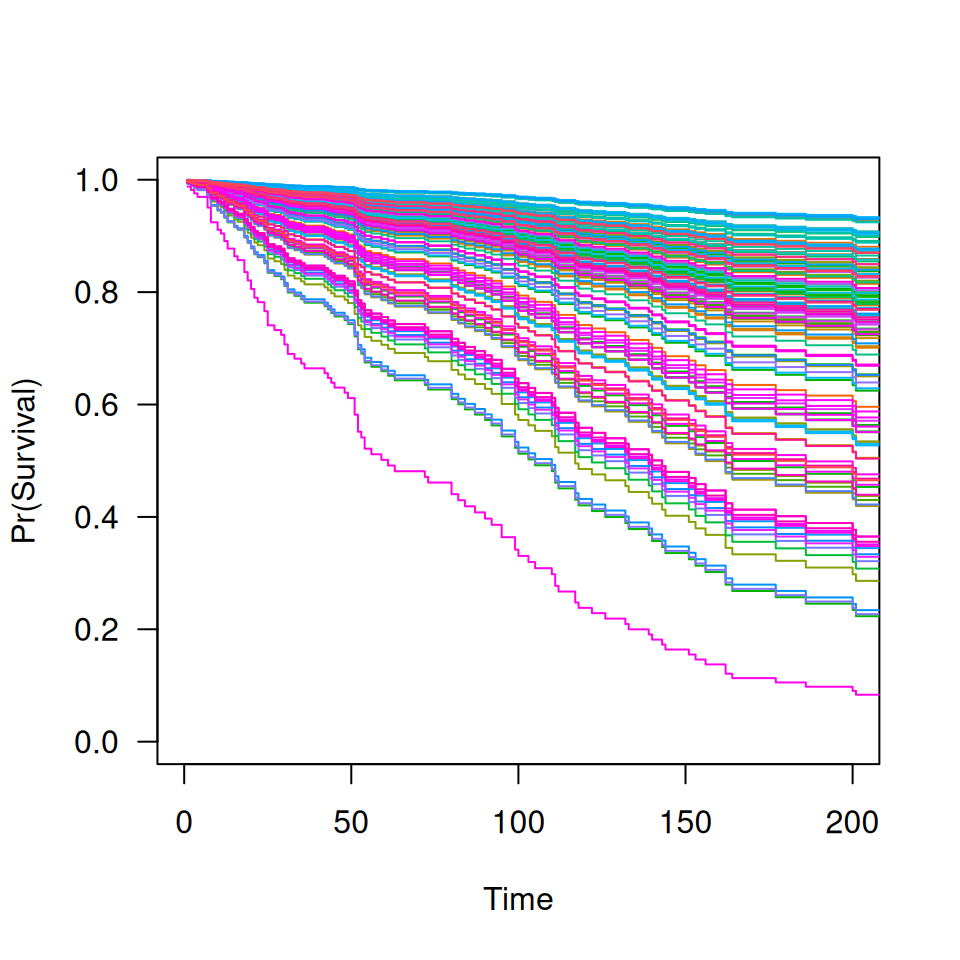

Similar to other predict methods, this function returns predictions from a
fitted ncvsurv object.
Fitted "ncvsurv" model object.
Matrix of values at which predictions are to be made. Not used for
type="coefficients" or for some of the type settings in
predict.
Type of prediction:
link returns the linear predictors
response gives the risk (i.e., exp(link))
survival returns the estimated survival function
median estimates median survival times
The other options are all identical to their ncvreg() counterparts:
coefficients returns the coefficients
vars returns a list containing the indices and names of the nonzero variables at each value of lambda
nvars returns the number of nonzero coefficients at each value of lambda.
Values of the regularization parameter lambda at which
predictions are requested. For values of lambda not in the sequence
of fitted models, linear interpolation is used.
Indices of the penalty parameter lambda at which predictions
are required. By default, all indices are returned. If lambda is
specified, this will override which.
Not used.
The object returned depends on type.
Estimation of baseline survival function conditional on the estimated values
of beta is carried out according to the method described in Chapter
4.3 of Kalbfleish and Prentice. In particular, it agrees exactly the
results returned by survfit.coxph(..., type='kalbfleisch-prentice')
in the survival package.
Breheny P and Huang J. (2011) Coordinate descent algorithms for nonconvex penalized regression, with applications to biological feature selection. Annals of Applied Statistics, 5: 232-253. doi:10.1214/10-AOAS388
Kalbfleish JD and Prentice RL (2002). The Statistical Analysis of Failure Time Data, 2nd edition. Wiley.
data(Lung)
X <- Lung$X
y <- Lung$y
fit <- ncvsurv(X,y)
coef(fit, lambda=0.05)
#> trt karno diagtime age prior squamous
#> 0.271657331 -0.031750420 0.000000000 -0.004227748 0.000000000 -0.852920353
#> small adeno large
#> 0.000000000 0.261188132 -0.466335148
head(predict(fit, X, type="link", lambda=0.05))
#> 1 2 3 4 5 6
#> -2.778003 -3.074368 -2.646943 -2.752636 -3.078596 -1.423431
head(predict(fit, X, type="response", lambda=0.05))
#> 1 2 3 4 5 6
#> 0.06216253 0.04621881 0.07086755 0.06375954 0.04602382 0.24088609
# Survival function
S <- predict(fit, X[1,], type="survival", lambda=0.05)
S(100)
#> [1] 0.9421869
S <- predict(fit, X, type="survival", lambda=0.05)
plot(S, xlim=c(0,200))

# Medians
predict(fit, X[1,], type="median", lambda=0.05)
#> [1] 999
M <- predict(fit, X, type="median")
M[1:10, 1:10]
#> [,1] [,2] [,3] [,4] [,5] [,6] [,7] [,8] [,9] [,10]
#> [1,] 80 103 122 151 177 231 278 340 384 411
#> [2,] 80 110 133 162 231 283 357 392 467 587
#> [3,] 80 103 122 151 177 231 278 340 384 411
#> [4,] 80 103 122 151 177 231 278 340 384 411
#> [5,] 80 110 133 162 231 283 357 392 467 587
#> [6,] 80 87 92 95 100 105 111 111 117 126
#> [7,] 80 95 105 117 132 144 156 177 201 242
#> [8,] 80 111 144 201 278 378 392 553 587 991
#> [9,] 80 99 112 133 153 177 216 250 283 357
#> [10,] 80 110 133 162 231 283 357 392 467 587
# Nonzero coefficients
predict(fit, type="vars", lambda=c(0.1, 0.01))
#> $`0.1000`
#> trt karno squamous adeno large
#> 1 2 6 8 9
#>
#> $`0.0100`
#> trt karno age prior squamous adeno large
#> 1 2 4 5 6 8 9
#>
predict(fit, type="nvars", lambda=c(0.1, 0.01))
#> 0.1000 0.0100
#> 5 7